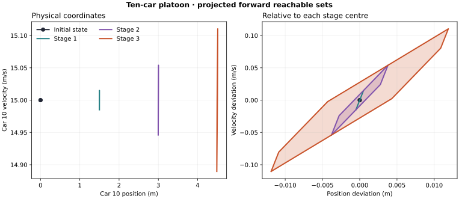

Forward reachability across 35 discrete models
Propagate a box of independent controls through the catalogue’s linear dynamics. See how the range of admissible controls changes the set of possible states over three steps.

Define the input set
The catalogue supplies the dynamics xk+1 = Axk + Buk + Gw and the initial point x0. Each control coordinate ranges independently over [−1, 1] in its tabulated units. The 22 supplied nominal external vectors are held constant. The other 13 models use an explicit zero external vector. This authored experiment has no state, headway or budget constraints.
Propagate and check
Start with the singleton {x0}. At each step, apply the affine image from the stored dynamics and take the Minkowski sum with the control box’s image under B. Independent controls give each step its own generator factors.
The independent checker works in the opposite direction. It propagates each support direction through AT using exact rational arithmetic on the stored binary64 inputs. All 7,592 checks pass across 140 model stages. The largest scaled discrepancy is 1.37 × 10−15 against a tolerance of 10−12. The samples compare support values. They do not certify enclosure under floating-point arithmetic.